Ultimate
Every previous fighter returns, with new combat tuning, a large solo campaign and a huge stage collection. Additional fighter DLC is separate.
Explore the reunion →The series field guide · 1999—2026
A shared cast. Different ways to fight—and to play alone. Follow the games from the original twelve to Ultimate’s reunion, with a clear guide to each solo experience.

All six released game products get their own profile. The paired 2014 games share a generation, but differ enough in stages and modes to compare separately. Recommendations are this guide’s editorial judgments; review scores and documented features are separate evidence.
Every previous fighter returns, with new combat tuning, a large solo campaign and a huge stage collection. Additional fighter DLC is separate.
Explore the reunion →The Subspace Emissary combines crossover cutscenes, side-scrolling levels and bosses. It also works as a local two-player adventure.
See Brawl’s solo modes →Distinct movement and timing, individual Target Tests, Event Matches and a compact Adventure route. More than a smaller Ultimate roster.
Explore the GameCube game →Special Orders and Events add structured solo goals; several modes also support co-op. Its eight-player couch play is a separate strength.
See the solo toolkit →Smash Run’s exploration-and-finale sessions are exclusive to this release. Same 2014 fighters as Wii U, different activities around them.
See Smash Run and more →A small cast, a short arcade ladder and character-specific target/platform challenges. An accessible historical starting point.
Explore the first game →The shared rule: build damage, then launch an opponent beyond the stage boundaries. Timed matches reward KOs; Stock gives each fighter limited lives. Items, hazards and team settings can change the mood from a precision duel to a party brawl. Every game supports solo practice and matches against CPU opponents, in addition to its dedicated solo modes.
[21][13][43]First release means the earliest original commercial launch, with region shown. Reissues, patches and DLC do not reset that date. “Smash 4” is a common shorthand for the paired 2014 games, not a separate seventh product.
| Game / system | First release | US release | Europe | Critics |
|---|---|---|---|---|
| Super Smash Bros.Nintendo 64 | 21 Jan 1999 Japan[1] | 26 Apr 1999 | 19 Nov 1999 | 79[16] |
| Super Smash Bros. MeleeGameCube | 21 Nov 2001 Japan[2] | 3 Dec 2001 | 24 May 2002 | 92[17] |
| Super Smash Bros. BrawlWii | 31 Jan 2008 Japan[3] | 9 Mar 2008 | 27 Jun 2008 | 93[18] |
| Super Smash Bros. for Nintendo 3DSNintendo 3DS | 13 Sep 2014 Japan[4] | 3 Oct 2014 | 3 Oct 2014* | 85[19] |
| Super Smash Bros. for Wii UWii U | 21 Nov 2014 North America[5] | 21 Nov 2014 | 28 Nov 2014 | 92[19] |
| Super Smash Bros. UltimateNintendo Switch | 7 Dec 2018 Worldwide[47] | 7 Dec 2018 | 7 Dec 2018 | 93[20] |
* Most European countries received the 3DS game on 3 October; Germany released it on 2 October 2014. Melee’s US date follows SmashWiki’s 3 December listing, also used by GameSpot; some retrospective lists give 2 December. Scores describe critical reception in different hardware eras, not an objective ranking of fighting systems or solo value.
Each profile compares the design with neighboring entries, separates launch reception from later reputation, and gives a reason to play the actual game. Use the filters for a solo interest, or compare two entries directly.
6 games
All profiles and the full solo-mode matrix remain readable without JavaScript. Enable it for filters and the comparison selector.
The crossover idea in its most compact form.
The change. Established the platform-fighter formula: damage makes opponents easier to launch, movement and recovery matter, and items can turn a match around. The twelve-fighter cast is much smaller than later entries, but the attacks, arenas and long combo opportunities give it its own feel.
Review consensus. Generally favorable reviews, aggregate 79. Accessibility and four-player mayhem drew praise; the thin solo offering and limited scale were common reservations. This is a launch-era assessment, not a verdict on the game’s later competitive following.
Why it still matters. For a small roster, the original fighting rhythm and its character-specific target and platform challenges. Later versions of its stages do not reproduce that whole package.
Full solo-mode breakdown →A major expansion, with its own demanding movement language.
The change. Expanded the original into a much larger roster, richer stages, trophies and a substantial collection of solo modes. Its movement and timing support a technically demanding style that later sequels change rather than simply improve in a straight line.
Review consensus. Universal acclaim, aggregate 92. Critics celebrated the expanded content, visuals and multiplayer depth. Some found it conservative as a sequel, and the quality of individual Adventure stages was uneven. Its later tournament reputation is a different measure from these original reviews.
Why it still matters. For its particular movement, its short Adventure route, 51 Event Matches and individual Target Tests. Ultimate’s returning Melee characters and stages do not include those modes or the same physics.
Full solo-mode breakdown →The cinematic adventure entry, with a gentler fighting pace.
The change. Added a full crossover adventure, stage building and the series’ first official online battles. Snake and Sonic opened the playable cast to third-party guests. The broader presentation and slower movement make it a distinct follow-up, with some Melee characters omitted.
Review consensus. Universal acclaim, aggregate 93. The quantity of content, music, approachable battles and adventure were widely praised. Some platforming sections and network experiences were less successful; later competitive criticism of its pace, tripping and balance should not be confused with a poor launch reception.
Why it still matters. For The Subspace Emissary’s character team-ups and cutscenes, especially with a local co-op partner. That campaign remains different from Ultimate’s World of Light.
Full solo-mode breakdown →The first portable Smash, with an exclusive exploration mode.
The change. A new handheld release in the paired 2014 generation. It trades the home version’s eight-player battles and several side modes for portability, a different stage selection and exclusive Smash Run. Characters such as Mega Man, Villager and the Mii Fighters broaden the cast.
Review consensus. Generally favorable reviews, aggregate 85 on 3DS. Reviewers admired how much Smash survived the handheld transition, along with the roster and presentation. Small-screen readability, handheld controls and a less ambitious solo package than Brawl were recurring limitations.
Why it still matters. For Smash Run and handheld-specific stages. It shares the Wii U game’s fighting core, but it is not merely a low-resolution copy with an identical menu of modes.
Full solo-mode breakdown →The 2014 fighting core, with a larger living-room toolkit.
The change. The home-console counterpart to the 3DS game. Its stage set and single-player format differ; Special Orders, Event Matches, Smash Tour and Stage Builder supply activities absent from the handheld release. It does not include Smash Run or a Subspace-style story campaign.
Review consensus. Universal acclaim, aggregate 92 on Wii U. Critics praised the refined fighting, flexible modes and eight-player spectacle. Online performance and some side activities were less consistently admired. Its stronger aggregate than the 3DS version reflects a differently equipped package, not a different set of playable fighters.
Why it still matters. For short challenge modes, Special Orders and the 2014 combat model. Ultimate succeeds it with a broader roster and different modes; it does not preserve every Wii U solo activity.
Full solo-mode breakdown →Every previous fighter, in a newly tuned game.
The change. A new sequel rather than an expanded Wii U port. Every previous playable fighter returns, alongside newcomers and rebuilt stages. Adds World of Light, Spirits, Squad Strike, Smashdown and Stage Morph, while revising combat. The roster reunion does not include every earlier mode.
Review consensus. Universal acclaim, aggregate 93. The roster, stage variety, combat refinement and sheer scope were widely celebrated. Online play drew criticism; World of Light’s repeated modified fights appealed more to some reviewers than others. Launch reviews predate its full DLC roster and later free features.
Why it still matters. For the broadest official fighter reunion and a large solo battle campaign. World of Light favors map exploration and Spirit loadouts; Brawl remains the more cinematic side-scrolling adventure.
Full solo-mode breakdown →No matching games. Clear your search or choose another solo interest.
How the roster numbers work: transforming or paired fighters count as one grouped entry; the three Mii styles and Echo Fighters count separately. Thus Melee has 25 grouped entries but 26 individual forms; Brawl has 35 versus 39; Ultimate has 74 base entries and 86 with all fighter DLC, versus 89 if Pokémon Trainer’s three Pokémon and Pyra/Mythra are counted individually. Costume variants such as Alph are not extra entries. These totals include unlockable fighters, not just those available on a fresh save.
[2][3][6][42][7]Compare the actual play experience, including solo modes—not just the roster size.
| Feature |
|---|
All six games work without a human opponent. The important difference is the structure around those fights: a story to finish, a short arcade run, a set of scenarios, a movement challenge, or open-ended practice. The sections below describe the updated games, not only what shipped on day one.
Brawl is the cinematic, side-scrolling choice. Ultimate offers a large map of battles and upgrades. Melee supplies a shorter themed traversal route. They share an “Adventure” label without delivering the same kind of campaign.
Every entry has an arcade-style ladder. Melee, Brawl and both 2014 games also have traditional All-Star gauntlets. Wii U’s Orders and Events are particularly useful when you want separate tasks rather than a long campaign.
The early games emphasize character-specific movement puzzles. Later games add different target games, horde survival and extensive collecting. Training and CPU matches let you set your own goals in every entry.
| Mode type | Smash 64 | Melee | Brawl | For Nintendo 3DS | For Wii U | Ultimate |
|---|---|---|---|---|---|---|
| Story / adventure | No long campaign | Short Adventure route | Subspace: story + platforming | No story campaign | No story campaign | World of Light: map + battles |
| Arcade ladder | 1P Game | Classic | Classic | Classic | Classic | Themed Classic routes |
| Traditional All-Star | No | Yes, unlockable | Yes; local co-op too | Yes; local-wireless co-op too | Yes; local co-op too | No; All-Star Smash is different |
| Dedicated Event Match list | No | Yes: 51 events | Yes; separate co-op list | No | Yes; separate co-op map | No; Spirit battles fill a related role |
| Target challenges | Individual Target + Platforms | Individual Target Test | Five shared Target Smash layouts | Target Blast bomb game | Target Blast bomb game | No dedicated target mode |
| Home-Run / horde modes | No standalone equivalent | Home-Run + Multi-Man | Home-Run + Multi-Man | Home-Run + Multi-Man | Home-Run + Multi-Man | Home-Run + Mob Smash |
| Distinctive extra | Board the Platforms | Trophy collection; Adventure | Unlockable Boss Battles | Smash Run | Special Orders; Smash Tour | Spirit Board; extensive Spirit collection |
| Campaign / run co-op | No | No in the main solo runs | Subspace, All-Star, Boss Battles | All-Star and Multi-Man over local wireless | Classic, All-Star, co-op Events | Classic yes; World of Light no |
Mode matrix [31][32][36][9][13][43][44][35][33]
Two names that can mislead: “Adventure” ranges from Melee’s compact route to Brawl’s cutscene-driven platformer and Ultimate’s Spirit-battle map. “All-Star Smash” in Ultimate is a Mob Smash survival activity, not the traditional All-Star mode from Melee through Wii U. A similar title does not guarantee the same solo experience.
[32][37][44][35]No long story campaign; a short, fixed 1P Game ladder.
Adventure: a repeatable Nintendo-themed platforming/battle route, not a long cinematic story.
The Subspace Emissary: side-scrolling action, bosses and cinematic crossover storytelling.
No story campaign. Smash Run offers short exploration-and-finale sessions.
No story campaign; Smash Tour is a board-game diversion playable against CPUs.
World of Light: branching map, Spirit battles, upgrades and bosses. Single-player only.
For a primarily solo player: start with Brawl if you want character interactions and side-scrolling levels, or Ultimate if you want a large progression map and many themed fights. Choose Wii U for its collection of discrete challenge modes, Melee for character-specific targets and a compact Adventure run, and 3DS if Smash Run’s short exploration loop appeals. Those are editorial recommendations based on mode design, not a ranking derived from review scores.
Brawl’s story supports a local partner; Ultimate’s story does not. Ultimate does offer two-player Classic and up-to-four-player standard Spirit Board battles. Wii U has several cooperative challenge modes; 3DS has two-player All-Star and Multi-Man over local wireless. Do not infer campaign co-op from the player count on the box.
[38][46][51][13][27]The listed core ladders, campaigns and local score modes are offline activities. Network shutdowns affect matchmaking and sharing, not those saved-game modes. Software updates and previously acquired DLC may change the content available on an older system.
[52][53][54]Smash revisits characters and arenas across generations. That overlap does not mean a later game contains the previous campaigns, movement systems or challenge layouts. The paired 2014 releases are the major case where a shared fighting foundation accompanies different surrounding content.
| Feature | For Nintendo 3DS | For Wii U |
|---|---|---|
| Fighters / combat | Same fighter roster and broadly shared core combat; 51 base entries, 58 with all DLC. | Same roster. The larger package is not explained by extra playable fighters.[6][11] |
| Stages / presentation | A distinct set emphasizing handheld history, with character outlines and portable play. | A different, partly overlapping stage collection in HD, emphasizing home-console games.[12][9][10] |
| Unique exploration / party mode | Smash Run: gather power-ups in a map, then face a randomized finale. | Smash Tour: a board-game contest. It does not include Smash Run.[9][10] |
| Solo / co-op suite | Classic, All-Star, Smash Run and score modes. No dedicated Event Match list or Special Orders. | Different Classic format, Events, Special Orders and more co-op options. Neither version has a full story campaign.[4][13][41] |
| Local battles | Up to four players on linked handhelds, each with their own game. | Up to eight on one Wii U, subject to mode and stage restrictions.[9][10] |
| Connectivity | Could exchange custom fighters and act as a controller for the Wii U game. | That link was not cross-platform matchmaking; original online battles were between players on the same platform.[13][14] |
The base roster includes all characters previously playable in Smash, including earlier DLC fighters. That is a roster reunion, not a promise of unchanged moves, balance or physics.
A large returning stage selection is rebuilt for Ultimate. It is not every stage ever made, nor a way to select the old games’ combat engines.
World of Light, Spirit Board and themed Classic routes replace the earlier menu mix. Subspace, Melee Adventure, Smash Run and Special Orders do not come bundled inside.
Movement, defensive timing and attacks change. Stage Morph, Squad Strike and Smashdown create different match structures. Treat Ultimate as a new sequel.
Sequel relationship [42][47][43][44][7][26]
| Layer | What it adds | Solo-player implication |
|---|---|---|
| Base Ultimate · 7 Dec 2018 | 74 grouped fighter entries, including unlockables; World of Light, Classic, Spirit Board and other modes. | The core campaign and solo modes do not require either Fighters Pass.[42][44][43] |
| Free 2019 mode updates | Standard Spirit Board co-op, Stage Builder and Home-Run Contest arrived through updates. | These are free additions, separate from buying fighters. Home-Run Contest was not in the original launch package.[51] |
| Fighters Pass · 5 packs | Joker, Hero, Banjo & Kazooie, Terry and Byleth, with associated stages and music. | More characters and Classic routes; themed DLC Spirit encounters. This is not a new adventure campaign.[48][46][51] |
| Fighters Pass Vol. 2 · 6 packs | Min Min, Steve/Alex, Sephiroth, Pyra/Mythra, Kazuya and Sora, with stages and music. | Further roster and themed content. Sora’s pack completed the fighter releases on 18 October 2021 in the US.[48][49] |
| Piranha Plant · separate | A standalone fighter purchase, outside both Fighters Passes. No associated stage/music pack. | Both passes alone do not supply every DLC fighter. Base 74 + 5 + 6 + Plant = 86 grouped entries.[48][7] |
| Mii costumes / amiibo | Separate costumes or optional physical figure functionality; neither is a replacement for fighter DLC. | A costume does not add the represented character as a full distinct fighter. Figures are not required for the core solo modes.[13][43] |
Older DLC does not transfer as a purchase. The 2014 games offered version-specific and dual-version DLC options, but an old purchase is not an Ultimate DLC license. Ultimate’s base game includes the earlier games’ DLC characters as part of its returning cast; its own later fighters are separately sold.
[15][42][48]| Example | What it means |
|---|---|
| Original Smash → iQue / Wii Virtual Console | Later releases of the N64 game, with regional/platform differences. Wii Virtual Console arrived in 2009. These are not Melee or Brawl remakes.[1] |
| Melee → compatible Wii hardware | Running a GameCube disc through supported backwards compatibility preserves Melee. It does not add Brawl’s adventure, roster or online play.[29] |
| Returning character / stage → Ultimate | Rebuilt or revised content inside the newer game. Selecting a Melee-origin stage does not select Melee physics, Adventure or Target Tests.[42][43] |
| Ultimate → Switch 2 | Nintendo lists the Switch game as supported, with behavior consistent with Switch. This is the existing game running on newer hardware; the compatibility listing is not a separate remake or new DLC-inclusive edition.[47] |
Solo content is especially useful here: an online shutdown does not remove an offline campaign. Keep the launch feature list separate from current services and from DLC already owned on a particular system.
| Game / group | Current distinction | What a solo player keeps |
|---|---|---|
| Smash 64 / Melee | Neither original game shipped with official online matchmaking. Later content reuse should not be mistaken for a complete port of either game. | The original ladders, challenges and CPU play. Melee also has its Adventure route and All-Star mode.[1][2] |
| Brawl | Nintendo Wi-Fi Connection ended on 20 May 2014. The original online matchmaking and associated services closed. | Subspace, local co-op, Classic, All-Star, Boss Battles, Events and local record modes remain offline activities.[52][36] |
| For 3DS / Wii U | New eShop purchases, including DLC, ended 27 March 2023. Official online play ended 8 April 2024. Nintendo still lists redownloads of previously purchased content and software updates as available for the foreseeable future. | Their local/solo modes continue. A used base copy does not grant a previous owner’s paid DLC; the 58-fighter total assumes all seven additions were acquired.[54][53][6] |
| Ultimate | Available as the Switch game and listed compatible with Switch 2. The latest update checked is 13.0.5, released 1 September 2026 in the US; it addresses online data behavior, not a new fighter expansion. | World of Light and the core solo suite remain part of the base game. Later mode additions need the free updates; paid fighters need their own entitlement.[47][50][51] |
A useful route through the series: try Ultimate for the modern all-round package, Brawl for the cinematic solo adventure, and Melee for a different movement model and its individual challenges. Add 3DS specifically for Smash Run or Wii U for Orders and Events. The original is a compact historical visit. There is no story continuity requiring you to play them in release order.
Nintendo’s sites, manuals and support pages establish mode features, version relationships, DLC and service status. Specialist references supply release history and mode details. Critic aggregates and contemporary reviews anchor the reception summaries.
Researched 24 November 2026. This covers the six official released game products: the N64 original, Melee, Brawl, both 2014 versions and Ultimate. The two 2014 releases share one generation. Reissues, regional builds, bundles, free patches, costume packs and fighter DLC are not counted as additional games. Unannounced sequels, rumors, mods and fan games are excluded.
Review consensus summarizes the broad critical response at the time, with representative reservations from reviews; it is not a poll of all fans. Metascores use the named original platform. Recommendations and “why it matters” notes are editorial synthesis. Solo coverage focuses on substantial game types, with collecting, practice and creative tools identified as extras rather than full campaigns. No exact completion times or exhaustive trophy/stage catalog is intended.
Design follows the companion Mario Kart field guide, with an original abstract arena illustration and locally bundled DejaVu fonts under the included license. No remotely loaded scripts, images or fonts. The shared Waypoints stylesheet remains at the required relative path; guide-specific styling is included here. Super Smash Bros. and character names are their respective owners’ trademarks. This is an independent reference guide.